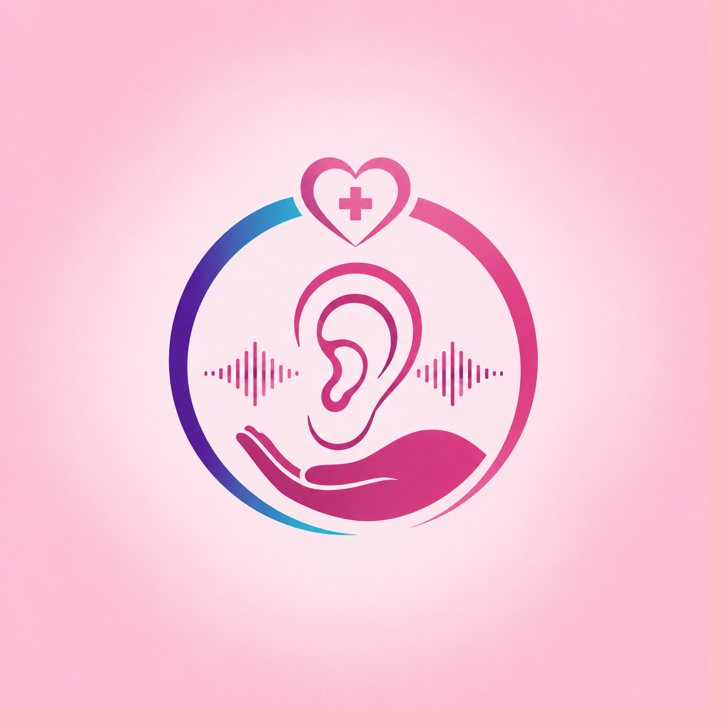

Omnacare provides a coordinated team approach to rehabilitation — delivered where recovery matters most: at home.



Care is structured, coordinated, and outcome-driven. Each patient undergoes a comprehensive assessment followed by an individualised rehabilitation plan. Therapists collaborate across disciplines to ensure continuity, with regular monitoring and clear progress tracking — focused on measurable outcomes including mobility, independence, and quality of life.
Omnacare is not just another therapy provider — it is a new model of rehabilitation that aligns clinical care with the realities of patients’ lives, the priorities of doctors, and the sustainability needs of funders.
Our approach demonstrates that integrated, home-based care is not only possible but essential for the future of South African healthcare.
You reach out by phone, email, or WhatsApp.
Our team assesses the patient’s needs and goals.
A tailored rehabilitation plan is developed.
Coordinated care is delivered in a familiar environment.
Extended facility-based rehabilitation is not always necessary. With the right structure and professional input, home-based rehabilitation can deliver equal or better outcomes while allowing patients to remain in their own environment — a practical, patient-centred alternative that bridges the gap between hospital and full recovery.
Omnacare positions home-based rehabilitation as the benchmark for quality, dignity, and long-term impact.
Patients, doctors, and funders engage with one accountable team delivering consistent, measurable results.
By shifting recovery out of hospitals and into homes, Omnacare creates a scalable, cost-conscious model.
We remove the disconnect between hospital discharge, community care, and patient outcomes.
Omnacare delivers outcomes that are clinically meaningful, financially sustainable, and personally transformative.
Start the recovery process in the comfort of your own home with a coordinated multidisciplinary team. Omnacare MDT — a multidisciplinary practice. Accessible care. Outcome focused.